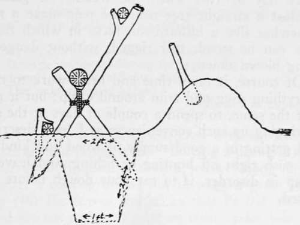

Camp Making. Part 5
Description
This section is from the book "Camping And Woodcraft", by Horace Kephart. Also available from Amazon: Camping and Woodcraft.
Camp Making. Part 5
Fig. 112. Spring Box.
Caches for provisions and other articles will be described in Volume II.
Tent Furnishings
If staying more than a night in one place, fit up the tent with hangers from which spare clothing, knapsacks and pouches, wall pockets, lantern, guns, and other loose articles may be suspended where they are kept dry, out of the way, and handy to get at. In a wall tent, plant a forked stake at each corner and lay a pole on them along each side, with nails in it. Guns are laid m shorter stakes underneath these. At the rear end you may set up a set of shelves for odds and ends.
If you have candles and no lantern, cut a stick long enough to hold the light as high as you want it, sharpen one end to shove in the ground, split the other end a little, put a loop of bark horizontally in the cleft, the candle in the loop, and draw tight against the stick. Half a potato, with a hole scooped in it, or a small can filled with earth, make* a portable candlestick.
Fence
Wild hogs are literally the betes noires of southern campers. Your thin-flanked, long-legged, sharp-nosed razorback, with tusks gleaming from his jaws — he or she of the third or further removed generation of feral lawlessness — is the, most perverse, fearless, and maliciously destructive, brute in America, wolverines or " Indian devils" not excepted. Shooting his tail off does not discourage him, rocks and clubs are his amusement, and no hint to leave that is weaker than a handful of red pepper baked inside a pone o' bread will drive him away. A hog-proof fence around camp, unsightly though it be, is one's only safeguard in southern wildwoods.
Wash-Stand
A shelf between two trees, made as previously described, is best for this purpose. It should be so situated that wash-water will be thrown directly into a stream, or at least where it will quickly drain away from the camp, so as not to attract flies.
If one's ablutions are performed in the stream itself, drive a stick in the ground and nail the lid of a tin box to the top of it for a soap-dish.
Camp Sanitation
Nothing is cleaner, sweeter, wholesomer, than a wildwood unspoiled by man; and few spots are more disgusting than a " piggy " camp, with slops thrown everywhere, empty cans and broken bottles littering the ground, and organic refuse left festering in the sun, breeding disease germs, to be spread abroad by the swarms of flies. I have seen one of Nature's gardens, an ideal health resort, changed in a few months by a logging crew into an abomination and a pest-hole where typhoid and dysentery wrought deadly vengeance.
Destroy at once all refuse that would attract flies, or bury it where they cannot get at it.
Fire is the absolute disinfectant. Burn all solid kitchen refuse as fast as it accumulates. When a can of food is emptied toss it on th^ fire and burn it out, then drop it in a sink-hole, that you have dug for slops and unburnable trash, and cover it with earth or ashes so no mosquitoes can breed in it after a rainfall.
The sink should be on the downhill side of camp, and where it cannot pollute the water supply. Sprinkle kerosene on it, or burn it out frequently with a brush fire.
A latrine, as substitute for a closet, is one of the first things to be provided. A rude but sanitary one that can be made in a short time is shown in Fig. 113. The excavated earth is piled at the rear, and a paddle is left in it to cover excreta every time the place is used. (Whoever wrote Deuteronomy was a good camper.) The log used as seat, and the back-rest, are removable, so that a fire can be built in the trench every now and then from dead brush. Ashes and charcoal are good disinfectants in themselves. Dry earth does very well; but the trench should be burnt out after a rain.
Fig. 113. Latrine.
A muslin or brush screen six feet high may be set around the latrine on stakes. A bathing screen can be similarly arranged at the water's edge.
Camp Conveniences
A chopping-block is the first thing needed about a camp. The axe. when not in use, should alwa}'s be stuck in that particular block, where any one can find it when wanted, and where it will not injure men or dogs.
Do not let the axe lie outdoors on a very cold night; the frost would make it brittle, so that the steel might shiver on the first knot you struck the next morning.
Stretch a stout line between two trees where the sunlight will strike, and air your blankets on it every day or two when the weather is pleasant. Against a straight tree near the tent make a rack, somewhat like a billiard-cue rack, in which fishing rods can be stood, full rigged, without danger of being blown down.
Of course, it takes time and brisk work to make everything snug and trim around camp; but it pays, just the same, to spend a couple of days at the start in rigging up such conveniences as I have described, and getting in a good supply of wood and kindling. To rush right off hunting or fishing, and leave the camp in disorder, is to eat your dough before it is baked.
Continue to: